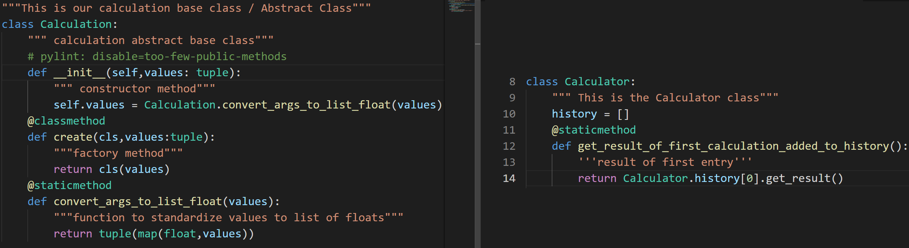

OOP Glossary
Below will be a detailed list of Object-Oriented Programming terminology with their corresponding definitions,
for your use.
-
Encapsulation: a core principle of OOP. The natural division of labor within your program,
allocating different tasks to different parts of your program
-
Abstraction: a core principle of OOP. Users can only indirectly change the state of a method or class
to improve security. A classes internal data and functions are hidden from the user
-
Inheritance: a core principle of OOP. You can have a 'parent' class and 'children' classes, where
the children inherit all or some attributes of the parents while also using their own methods
-
Polymorphism: a core principle of OOP. The interpreter of the language will be able to tell the difference
between many similar named classes and methods and return the proper data
-
Class: a template of data that can be replicated many times.
-
Object: the result of the replicated class. When a class is called from code and instantiated with a
variable, it becomes an object of the class
-
Method: a function that belongs to a class. When that function is called, it is considered a method
-
Factory: an object which creates other objects, utilizing poly,morphism to accomplish a task
-
Instantiation: the creation of an object. When an object is created from a class, the object is
instantiated
-
Namespace: when a class is instantiated with an equivalence to a certain variable, the pair and
subsequent pairs with the program can be considered a namespace
- Constructor: this is a method within Python that initializes and assign values in a class when it is
created.
-
Fixture: primarily used for testing. This is a piece of code that will run everytime a test is executed
-
Type Hint: quite literally it's name, you tell give Python a hint as to which type of object
should be utilized when a program is run. Helps increase predictability with extremely large and complex
programs
-
Type Cast: having the ability to specify the type of data Python should read information as, similar
to type hinting with classes. Also having the ability to convert data types
-
Unit Test: testing individual aspects of a program, such as specific functions and classes without
running the full program
-
Static: functions that are specific to a file, and subsequently cannot be seen by functions outside of
the file
-
Facade: a design pattern to structure code. It simplifies the interface to a complex set of classes
-
Property: a set of methods which 'get' a value and 'set' the new value
-
Tuple: a common data structure that consists of a set of items with a specific order that are
unchangeable
-
Decorator Method: a design pattern to structure code. Adds functionality to a class without directly
changing it